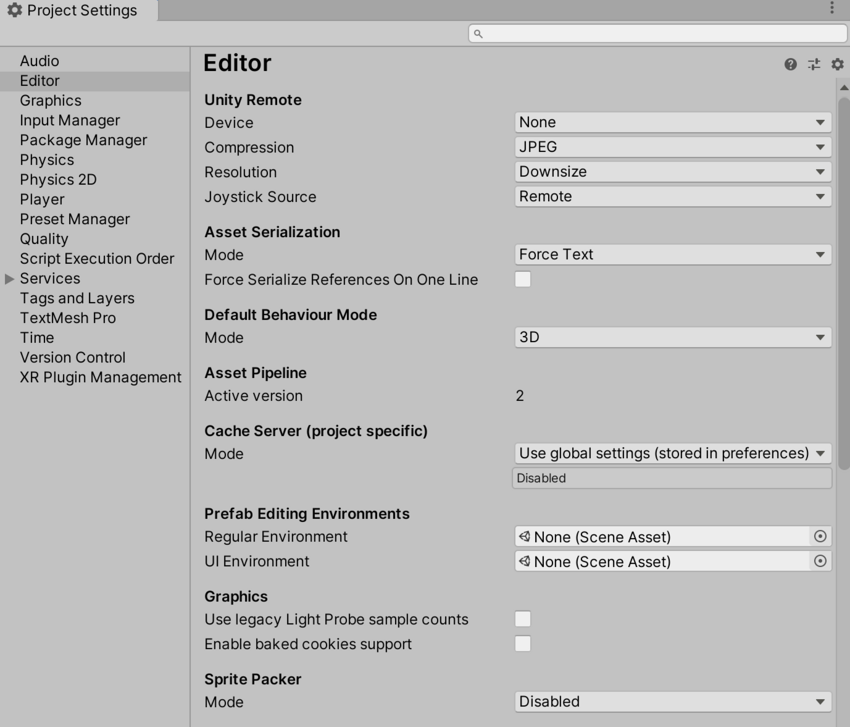
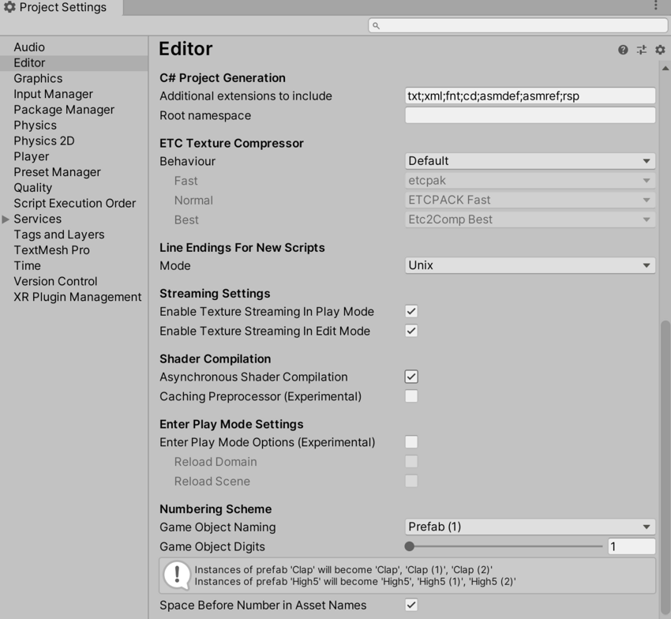

Use the Editor settings (main menu: Edit > Project Settings, the select the Editor category) to apply global settings for working in Unity’s Editor.
 
| 属性 | 功能 | |
|---|---|---|
|
Unity Remote Note: Unity Remote is deprecated in 2020.1 and future versions. To test your app on mobile devices, use the Device Simulator package instead. |
||
| 设备 | 选择要用于 Unity Remote 测试的设备类型。 Unity Remote 是可下载的应用程序，旨在帮助进行 Android、iOS 和 tvOS 开发。 |
|
| Compression | Choose the type of image compression to use when transmitting the game screen to the device via Unity Remote. Default is JPEG. | |
| JPEG | JPEG 通常提供更高压缩比和性能，但图形质量稍低。这是默认选项。 | |
| PNG | PNG 可以更准确地体现游戏显示效果，但可能会降低性能。 | |
| Resolution | Choose the resolution the game should run at on Unity Remote. Default is Downsize. | |
| Downsize | 以较低的分辨率显示游戏。这样可以获得更高的性能，但图形精度降低。这是默认选项。 | |
| Normal | 以正常分辨率显示游戏。这样可以获得更高的图形精度，但性能降低。 | |
| Joystick Source | Choose the connection source for the joysticks you are using. Default is Remote. | |
| Remote | 使用连接到运行 Unity Remote 的设备的游戏杆。这是默认选项。 | |
| Local | 使用连接到运行 Editor 的计算机的游戏杆。 | |
| Version Control | ||
| Mode | Choose the visibility of meta files. You can use Unity in conjunction with most common version control tools, including Perforce and PlasticSCM. Default is Hidden Meta Files. For more information on showing or hiding meta files, see Visible or hidden meta files at Unity Answers. |
|
| Hidden Meta Files | 隐藏元文件。这是默认选项。 | |
| Visible Meta Files | 显示元文件。这在使用版本控制时很有用，因为此选项允许其他用户和计算机查看这些元文件。 | |
| Perforce | 使用 Perforce 版本控制系统。 | |
| PlasticSCM | 使用 PlasticSCM 版本控制系统。 | |
| Asset Serialization | ||
| Mode | Choose which format to use for storing serialized Assets. This is set to Force Text by default. Unity uses serialization to load and save Assets and AssetBundles to and from your computer’s hard drive. To help with version control merges, Unity can store Scene files in a text-based format. If you are not merging Scenes, Unity can store Scenes in a more space-efficient binary format, or allow both text and binary Scene files to exist at the same time. |
|
| Mixed | 二进制模式下的资源保持二进制模式，文本模式下的资源保持文本模式。默认情况下，Unity 对新资源使用二进制模式。 | |
| Force Binary | 将所有资源转换为二进制模式，包括新资源。 | |
| Force Text | 将所有资源转换为文本模式，包括新资源。这是默认选项。 | |
| Serialize Inline Mappings On One Line | 启用此设置可使 Unity 将引用和内联映射写在一行中。如果禁用此设置，当一行中的总字符数超过 80 个字符时，Unity 会将文本序列化引用拆分为多行。 | |
| Default Behavior Mode | ||
| Mode | Choose the default 2D or 3D development mode. Unity sets up the certain default behaviors according to the mode you choose to make development easier. Default is 3D. | |
| 3D | 将 Unity 设置为 3D 开发模式。这是默认选项。 | |
| 2D | 将 Unity 设置为 2D 开发模式。 | |
| Asset Pipeline | ||
| Mode | 选择要使用的资源管线版本。 | |
| Version 1 (deprecated) | 使用资源管线版本 1。此功能已被弃用，不再受支持。 | |
| Version 2 | 使用资源管线版本 2。这是默认选项。 | |
| Active version | 显示活动的资源管线版本。为了使更改生效，必须保存并重新启动项目。 | |
| Cache Server (project specific) | ||
| Mode | 选择要使用的缓存服务器 (Cache Server)。 | |
| Use global settings (stored in preferences) | The default Cache Server set in the Preferences window is used. | |
| Enabled | 选择要使用的特定缓存服务器，而不是默认缓存服务器。 | |
| Disabled | 不使用缓存服务器。 | |
| Prefab Editing Environments | ||
| Regular Environment | 在预制件模式下将一个场景指定为常规预制件（即具有常规变换组件的预制件）的编辑环境。这样便可以根据选择的背景（而不是空场景）编辑预制件。 请参阅在预制件模式下编辑预制件以了解更多信息。 |
|
| UI Environment | 在预制件模式下将一个场景指定为 UI 预制件（即具有矩形变换组件的预制件）的编辑环境。这样便可以根据选择的背景（而不是空场景）编辑预制件。 请参阅在预制件模式下编辑预制件以了解更多信息。 |
|
| Graphics | ||
| Show lightmap resolution overlay | 此设置与烘焙全局光照 (Baked Global Illumination) 类别中的绘制模式 (Draw Modes) 关联。启用此设置后，Unity 会在这些绘制模式之上绘制一个棋盘覆盖层，其中每个棋盘格区块对应一个纹素。此设置可在光照贴图时用于检查场景的纹素密度。 活动的绘制模式 (Draw Mode) 来自烘焙全局光照 (Baked Global Illumination) 类别时，还可以从 Draw Mode 下拉菜单中切换此设置。 |
|
| Use legacy Light Probe sample counts | 使用固定光照探针样本计数通过渐进光照贴图 (Progressive Lightmapper) 进行烘焙。样本计数为：64 个直接样本、2048 个间接样本和 2048 个环境样本。 | |
| Enable baked cookies support | 对于在 Unity 2020.1 或更高版本中创建的项目，默认在渐进光照贴图中为烘焙光源和混合光源启用烘焙剪影。对于在 Unity 2020.1 之前中创建的项目，默认在渐进光照贴图中为烘焙光源和混合光源禁用烘焙剪影。这是为了提供向后兼容性。 启用此选项可为渐进光照贴图中的烘焙光和混合光启用烘焙剪影。 有关更多信息，请参阅剪影。 |
|
| Sprite Packer | ||
| Mode | Choose a mode to configure the Sprite Packer tool. The Sprite Packer tool automates the process of generating Sprite Atlases from individual Sprite Textures. This setting is set to Disabled by default. | |
| Disabled | Unity does not pack Sprite Atlases. This is the default setting. | |
| Sprite Atlas V1 - Enabled For Builds | Unity packs Sprite Atlases for builds only. | |
| Sprite Atlas V1 - Always Enabled | Unity packs Sprite Atlases for builds and before entering Play mode. | |
| Sprite Atlas V2 (Experimental) - Enabled | Unity packs Sprite Atlases for both builds and before entering Play mode. | |
| Sprite Atlas V2 (Experimental) - Enabled For Builds | Unity packs Sprite Atlases for builds only. | |
| C# Project Generation | ||
| Additional extensions to include | 包含要添加到 C# 项目的其他文件类型的列表。用分号分隔每个文件类型。默认情况下，此字段包含 txt;xml;fnt;cd。 |
|
| Root namespace | Fill in the namespace to use for the C# project RootNamespace property. See Common MSBuild Project Properties for more information. This field is blank by default. |
|
| ETC Texture Compressor | ||
| 行为 | 指定用于 ETC 纹理的不同压缩质量的压缩工具。 可用的压缩工具包括 etcpak、ETCPACK 和 Etc2Comp。它们都是第三方压缩工具库。 |
|
| Legacy | Use the configuration that was available before ETC Texture compression became configurable. This sets the following properties: - Fast: ETCPACK Fast - Normal: ETCPACK Fast - Best: ETCPACK Best |
|
| Default | Use the default configuration for Unity. This sets the following properties: - Fast: etcpack - Normal: ETCPACK Fast - Best: Etc2Comp Best |
|
| Custom | Customize the ETC Texture compression configuration. When you choose this option, the Fast, Normal, and Best properties are enabled. This maps to the Compressor Quality setting in the Texture Importer for the supported platforms. | |
| Fast | 定义用于快速压缩的压缩质量工具。 | |
| Normal | 定义用于正常压缩的压缩质量工具。 | |
| Best | 定义用于最佳压缩的压缩质量工具。 | |
| Line Endings For New Scripts | ||
| Mode | 选择文件行尾以应用于在 Editor 中创建的新脚本。请注意，配置这些设置不会转换现有脚本。 | |
| OS Native | 根据运行 Editor 的操作系统来应用行尾。 | |
| Unix | 根据 Unix 操作系统来应用行尾。 | |
| Windows | 根据 Windows 操作系统来应用行尾。 | |
| Streaming Settings | ||
| Enable Texture Streaming in Play Mode | Enable Mipmap Streaming in Play Mode. The Quality Texture Streaming setting must also be enabled. |
|
| Shader Compilation | ||
| Asynchronous Shader Compilation | 启用此复选框可使 Unity 在后台编译着色器。编译时，Unity 引擎使用虚拟着色器在 Editor 中渲染几何体。着色器编译完成后，引擎将重新换入您的着色器变体。这意味着 Editor 将无缝运行，而无需等待 Unity 引擎编译每个着色器变体后才进行渲染。有关更多信息，请参阅异步着色器编译。 | |
| Numbering Scheme | ||
| Game Object Naming | 重复的游戏对象的命名方案。重复或实例化的游戏对象的命名方式是将连续数字附加到原始对象名称后。 | |
| Game Object Digits | 设置用于复制游戏对象的数字的位数。 | |
| Space Before Number in Asset Names | 控制是否在重复的资源名称中的数字前插入空格。 | |
EditorManager